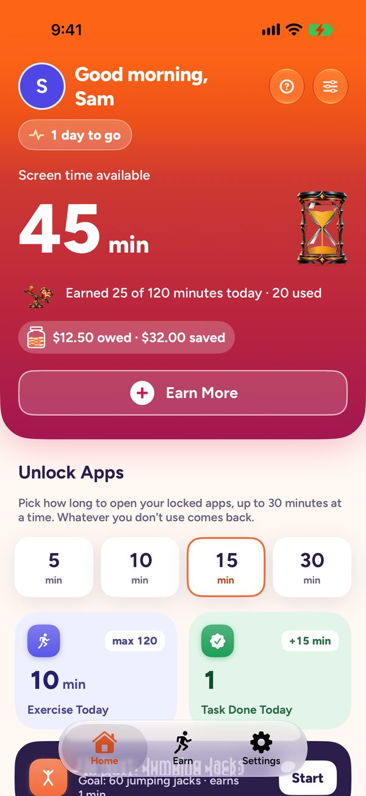
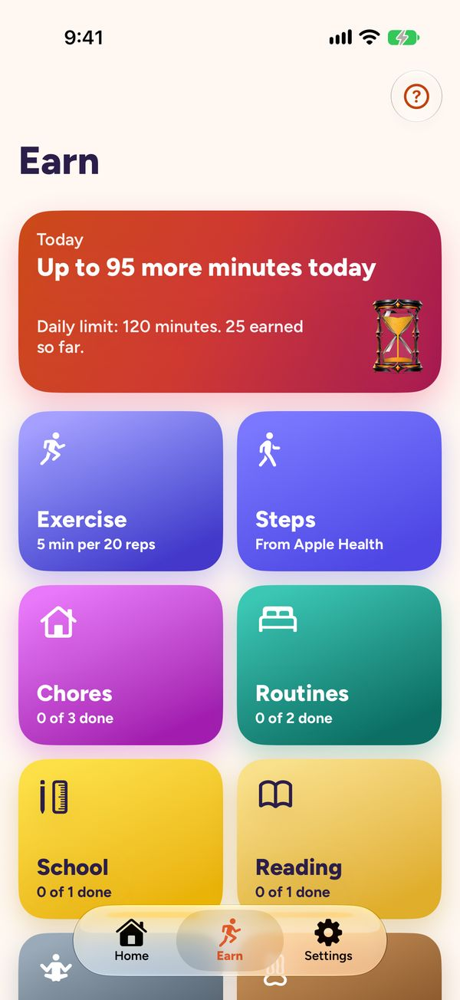
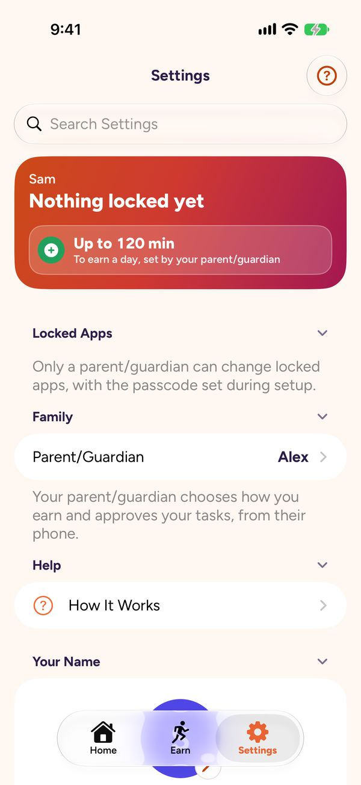
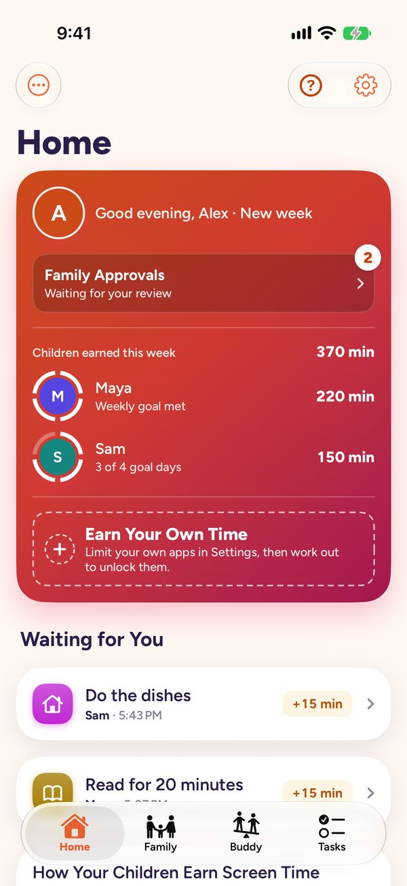
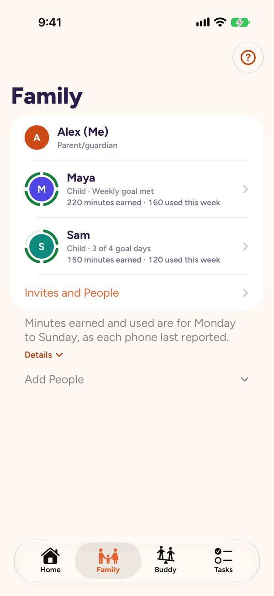
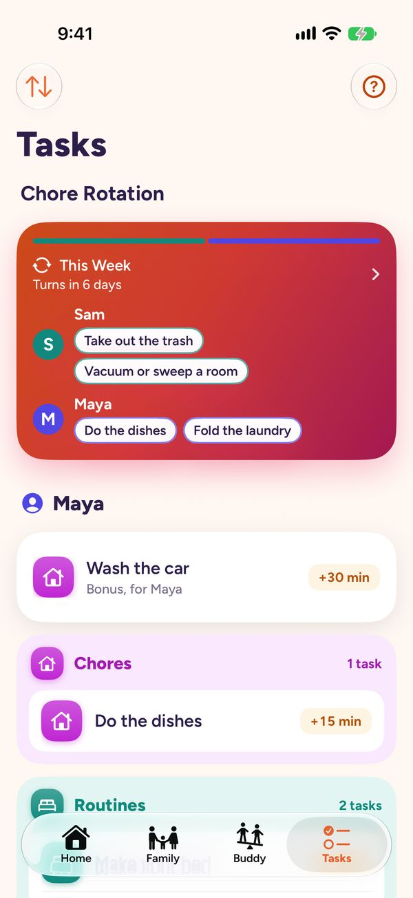
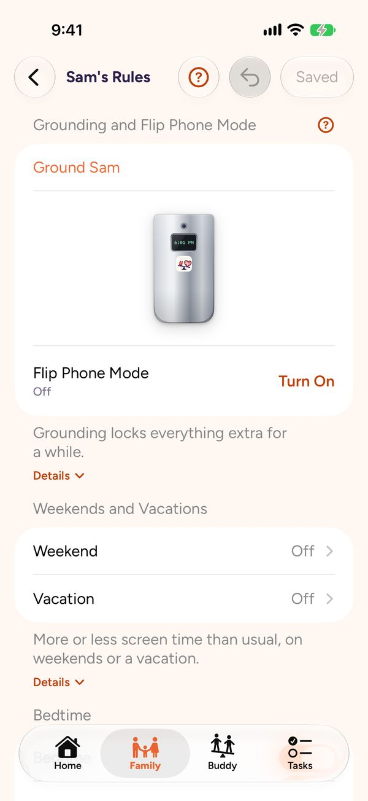
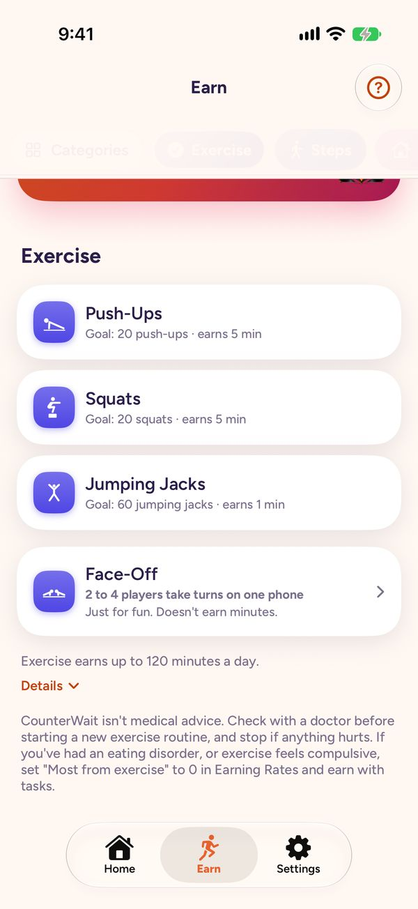
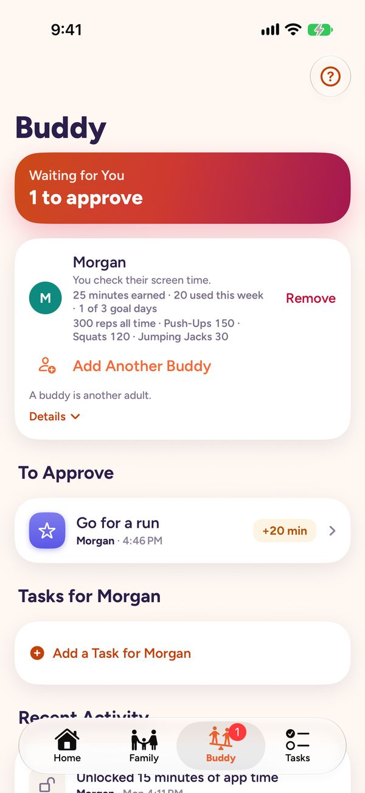

Guide
The same tour the app gives, screen by screen. In the app, tap the "?" on any screen to see its cards, or "Show Me Around" to have it point at the real buttons. To replay or turn off the tours, go to Settings > Tips and Tours.
Jump to: Earning and unlocking · For parents and guardians · Introducing it at home · Keep each other honest · When an app is locked · How tasks and alerts get there
Earning and unlocking
These screens are on a child's iPhone and a "Just Me" iPhone.
Home
- Home: your saved minutes and what's next, all on one screen.
- Unlock Apps: spend saved minutes to open your locked apps. Minutes count only while a locked app is on your screen, touched or not, and unused minutes come back.
- Up Next: your next task. Swipe left for the next one and right to go back. Tap one to mark it done.
- Make It Yours: change what Home shows and in what order. Touch and hold a tile for more.

Earn
- Earn: every way to earn minutes is here. Pick a kind to see its tasks.
- Tasks: finish a task and mark it done. If someone approves your tasks, it goes to them first, and the minutes come when they approve.
- Camera Workouts: the camera counts push-ups, squats and jumping jacks, and the reps it counts are what earn minutes. Nothing is recorded.
- Apple Health: steps, workouts, Exercise minutes and mindful minutes from Apple Health are added each time you open the app. On a treadmill, start an Indoor Walk or Indoor Run workout on your Apple Watch so the whole time counts. Holding the rails can stop your iPhone or Watch from counting steps.
- Daily Limits: there's a most you can earn each day, and exercise has its own. Whatever's left over stays saved.

People
On a "Just Me" iPhone that checks someone.
- People: the people you check. Their tasks waiting for you show here to approve.
- Approving: tap a task to see it, and any photo, then approve it or tap "Not Yet". Approved minutes go straight to their phone.
Settings
- Locked Apps: pick the apps and websites that need minutes to open. Apps That Never Lock stay open, like Phone, Maps or school apps such as Google Classroom or a calculator. On a child's iPhone, changing either needs the parent/guardian passcode.
- Passcode and Face ID: the passcode keeps big changes from happening by accident. Face ID can stand in for it on an adult's phone.
- Display: units and appearance.

For parents and guardians
Home
- Home: what needs you today: tasks waiting to approve, money to pay out, and what the family's been doing.
- Waiting for You: approve the children's tasks here, or tap "Not Yet" to send one back. Approved minutes and money go to their phone right away.
- Buddy: the Buddy tab at the bottom, next to Family: someone who checks your own screen time, like your co-parent/guardian, or someone you check. See How buddies work.
- Recent Activity: what everyone earned and spent lately.

Family
- Family: everyone in the family: the children, and a co-parent/guardian once they join.
- Invites: add your co-parent/guardian or a child. An invite goes as a link or a QR code.
- Each Child: tap a child for their rules: grounding, weekends, bedtime, spending limits and what comes first before screens.

Tasks
- Tasks: the tasks each child can earn from, and what each one pays.
- Adding a Task: add a task with what it pays in minutes, or money with Plus. Tap a task to change it.
- Chore Rotation: with two or more children, set up a rotation on its own screen: the chores stay the same and the children take turns.

Chore Rotation
- Two Wheels: names on top, chores underneath. Each week (or day) the wheels turn opposite ways, and everyone moves to the next chore.
- Look Ahead: swipe the names, or tap "Next Week", to see who has what later on.
- Keep a Chore: press and hold a chore and drop it on a name, or a name on a chore, to keep it on that person. It shows a lock until it ends.
- Change It: tap a chore to change its name, pay or photo. Edit Rotation changes who's in it, the order, and weekly or daily.
Rules
- Rules: everything about this child's phone. Grounding and Flip Phone Mode change as soon as you tap them. Everything else waits until you tap Save.
- Grounding and Flip Phone: grounding locks every app except Phone and the apps that never lock, for as long as you pick. Flip Phone Mode does the same until you turn it off, so they keep their phone for calls, and for texts if Messages is in Apps That Never Lock. School apps lock too unless they're there.
- Weekends and Bedtime: more or less time on weekends and vacations, a bedtime, and a daily spending limit. Many families find it helps to charge phones outside the bedroom overnight.
- First, Before Screens: pick what has to be done each day before any locked app opens, like the morning routine.

Grounding
- How Long: pick a quick length, or choose a number of hours, days or weeks, up to 30 days.
- A Chore: a chore can be part of it, for the same time or a different one. It doesn't pay unless you turn on Still Pays.
- Check It Over: nothing happens until the last button. Back works on every step.
- Ending Early: End Grounding opens their apps again. A chore set for longer asks whether to keep it.
Exercise
- Exercise: the same camera workouts the children use. The camera counts reps on your phone and records nothing.
- Face-Off: two to four people take turns on one phone. When it ends, you can give your children minutes for their reps.
- Apple Health: your steps, workouts and Exercise minutes count toward your weekly goal.

Settings
- Your Own Apps: turn on "Limit My Own Apps" to earn time for your own apps too. Then choose the apps to lock, and Apps That Never Lock, like Maps, which stay open. Apple's list of apps can include your children's apps too. Picking one that isn't on your iPhone changes nothing, and the search bar finds yours.
- Notifications: choose what this phone tells you about, like tasks to review.
- Tours: replay these tours, or turn them off, under Tips and Tours.
Introducing it at home
How limits are set matters. In a study of 1,651 teens, those whose parents set gaming limits in a controlling way fared worst, compared with parents who explained the limits and took their view into account (Bradt et al., Journal of Adolescence, 2023). A few ways to start:
- Talk first. Say which apps will lock and why, before you turn it on.
- Let them suggest tasks. You still approve them, but ones they picked feel fairer.
- Lock only the apps that eat the day. Everything else stays open, so not every minute of free time has to be earned.
- Start small. A few tasks they can actually do, so the first week shows earning works.
- Exercise safely. Children's camera workouts should be done with an adult nearby, in a clear space. If you've had an eating disorder, or exercise feels compulsive, set “Most from exercise” to 0 in Earning Rates and earn with tasks instead.
- Check in after a week. Ask whether the rewards feel fair and approvals came quickly enough, and adjust.
Keep each other honest
Two adults can each be the other's buddy. Think of it as a shared goal and someone in your corner, not a race. For a teen, a friend their own age is a fine buddy for cutting back together. If an adult checks a teen, it should be a parent, guardian or another adult in their family. An adult who asks a teen for personal photos, or to keep a secret, isn't safe.
- Setting it up: on a parent/guardian's iPhone, open the Buddy tab and tap "Check Each Other". On a "Just Me" iPhone, each of you goes to Settings > Accountability Buddies, taps "Check on Someone Else" and sends the link to the other.
- What changes: each of you approves the other's tasks, and neither can approve your own. That's the point.
- Agree on the goal: say what you're both aiming for, like phones down after 9. Notice the good weeks. Nobody needs to be ahead.
- Together in person: Face-Off takes 2 to 4 people on one phone. Add your reps up as a team. It doesn't earn minutes, on purpose.

More in How buddies work.
When an app is locked
Opening a locked app shows CounterWait's lock screen. With enough minutes saved, tap "Unlock 15 Minutes", then tap again to confirm. Otherwise it says what's in the way, like bedtime or a task to do first.
"Open CounterWait" and "Earn Minutes" work through a notification. iOS doesn't let a lock screen open an app, so tapping one sends a notification, and tapping that opens CounterWait. With notifications off, or with Do Not Disturb or another Focus on, the notification may not show. Then open CounterWait from your Home Screen.
Getting help. In a crisis, call or text 988 (US) or your local emergency number. Phone and Emergency SOS never lock. Keep Messages in Apps That Never Lock, so texting for help stays possible during grounding or Flip Phone Mode.
"Time to check for new rules" shows on a child's iPhone that hasn't heard from its parent/guardian in 6 hours, or since it restarted. Being on Wi-Fi isn't enough: open CounterWait while connected to the internet, and it checks. No internet? A parent/guardian with you can use "Pause Locking" in CounterWait's Settings, with the passcode.
How tasks and alerts get to the other phone
Everything you send goes through your own iCloud account to the other person's iPhone. CounterWait has no servers of its own.
- Sending: the button reads "Saving…" until iCloud has it, usually a few seconds, and can't be tapped again until then. If it can't get through, CounterWait says "Couldn't Send", with Try Again.
- A task you add for a buddy: under it, "Sent · Waiting for their phone" turns into "On their phone" once their iPhone has it. That means it got there, not that they've looked yet.
- Alerts: most come straight from iCloud, so they show even with CounterWait closed: tasks sent for review, approvals and Not Yet, new tasks, and security alerts. In a buddy group with more than one other person, approvals and new tasks wait for iPhone to wake CounterWait instead, so nothing about one person shows on someone else's lock screen. iPhone does that on its own schedule: sooner when CounterWait isn't swiped away, Background App Refresh is on, and Low Power Mode is off.
- Nothing yet? Open CounterWait on either phone. It checks iCloud right away.
- No flooding: each phone sends at most 30 lock-screen alerts an hour, so nobody's phone gets buried.